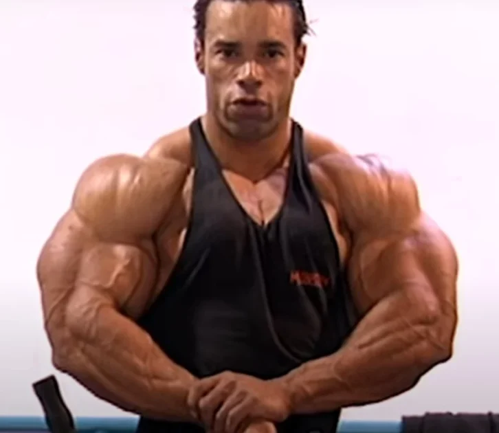
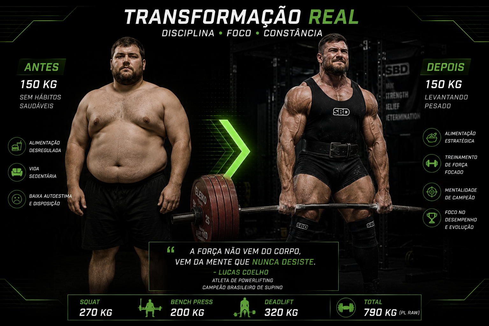

Força e Powerlifting
O treinamento de força busca aumentar a capacidade de produzir força contra uma resistência. No powerlifting, os movimentos competitivos são agachamento, supino e levantamento terra. A evolução depende de técnica, progressão planejada, recuperação e consistência.

Volume e intensidade
O volume e a intensidade variam conforme a experiência, a fase do planejamento e a capacidade de recuperação. Séries com poucas repetições e cargas relativamente altas são frequentemente usadas para desenvolver força máxima; séries com mais repetições também podem apoiar o desenvolvimento muscular e a capacidade de trabalho.
Não existe uma quantidade fixa de séries ideal para todas as pessoas. Aumente a carga de forma gradual, mantenha a técnica e respeite os períodos de descanso. Se estiver começando, aprenda os movimentos com orientação adequada antes de tentar cargas elevadas.

Movimentos principais do powerlifting
| Movimento | Exercício principal | Objetivo |
|---|---|---|
| Agachamento | Agachamento com barra | Desenvolver força principalmente em pernas e quadril. |
| Supino | Supino reto com barra | Desenvolver força de peitoral, ombros e tríceps. |
| Levantamento terra | Levantamento terra com barra | Desenvolver força na cadeia posterior, quadril e pernas. |
Como estruturar a rotina
Os movimentos principais podem ser praticados mais de uma vez por semana, com variações de carga, séries e repetições. O planejamento deve considerar o nível do praticante, os dias disponíveis, a técnica e a recuperação. Descansos mais longos podem ser úteis em séries pesadas, mas devem ser ajustados ao esforço e ao objetivo.
Exemplo de divisão semanal para força
Esta rotina combina Push / Pull / Legs + Upper / Lower com foco nos movimentos básicos do powerlifting: agachamento, supino e levantamento terra. Use cargas que permitam manter a técnica; evite testar cargas máximas sem preparação e supervisão adequada.
Segunda — Push (ênfase no supino)
- Supino reto com barra — 4 × 4–6
- Supino pausado leve — 3 × 5–6
- Desenvolvimento com halteres — 3 × 6–8
- Supino fechado ou tríceps na polia — 3 × 8–10
- Elevação lateral — 2 × 12–15
Terça — Pull (costas e cadeia posterior)
- Levantamento terra técnico — 3 × 3–5
- Remada com apoio — 4 × 6–8
- Puxada alta — 3 × 8–10
- Extensão lombar leve ou bird-dog — 2–3 séries controladas
- Rosca bíceps — 2–3 × 8–12
Quarta — Legs (ênfase no agachamento)
- Agachamento com barra — 4 × 3–6
- Agachamento com pausa leve — 3 × 4–6
- Leg press — 3 × 8–10
- Mesa flexora — 3 × 8–12
- Panturrilhas — 3 × 10–15
Quinta — Upper (técnica e volume moderado)
- Supino com carga moderada — 3 × 6–8
- Remada baixa — 3 × 6–10
- Desenvolvimento leve — 2–3 × 8–10
- Puxada neutra — 3 × 8–10
- Face pull — 2 × 12–15
Sexta — Lower (terra e assistência)
- Levantamento terra — 3 × 3–5, com técnica estável
- Agachamento frontal ou goblet — 3 × 6–8
- Hip thrust — 3 × 6–10
- Mesa flexora — 3 × 8–12
- Abdominal com controle — 3 séries
Sábado — Recuperação ativa opcional
Caminhada leve e mobilidade confortável. Evite transformar o dia em outra sessão pesada.
Domingo — Descanso
Priorize sono e recuperação. Ajuste o plano se o desempenho cair ou o cansaço se acumular.
Descanse cerca de 2–4 minutos nas séries principais e 1–3 minutos nos exercícios auxiliares, conforme a necessidade. Mantenha algumas repetições na reserva na maior parte do treino. A seleção, as cargas e a frequência devem ser ajustadas ao nível individual, de preferência com orientação de um profissional de Educação Física.